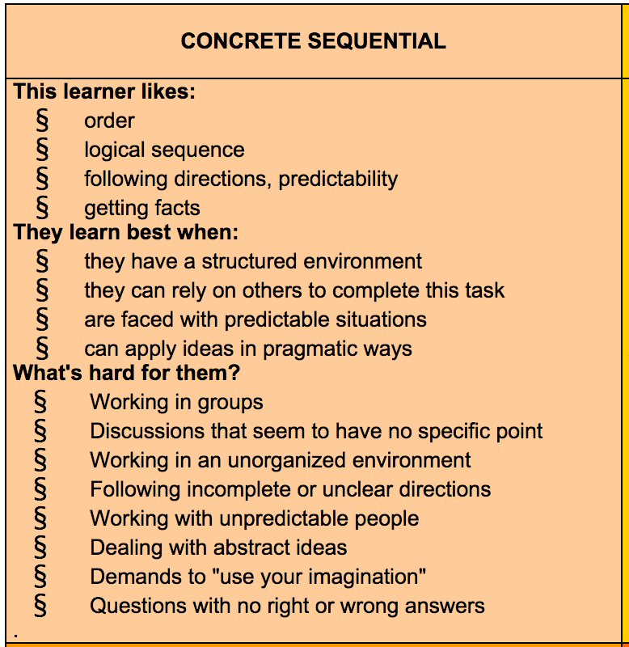
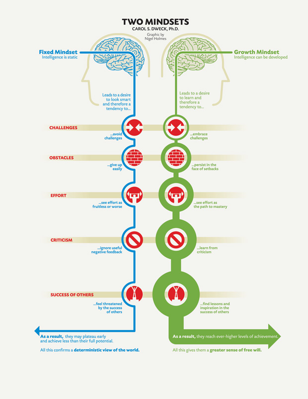

The one with the creative struggle
10/04/14 :: Phase 0 Week 3
They say the mind holds all the powers in the world. It's where we perceive our world, translate it into meaning and something relatable to ourselves. It's where we feel and express our emotions. It's where we find the strength and weaknesses that pushes or blocks us from our goals every day, every minute, every moment. If you asked me where the mind was, I can honestly say, "I'm not sure" while pointing to the general area above my head. It's not anything tangible, but it is malleable.
Concrete Sequential Thinker & Fixed mindset
I am a concrete sequential thinker and this means the following:
See full article here
And being one of a fixed mindset this is me as well:

See full article here
And I have to say...this is really textbook me, give or take 1 or 2 bullet points. I think depending on some occassions and moods, I'll be more flexible about some things, but it's pretty funny when you find something that knows you better than you know yourself.
Knowing this I feel like there are definitely going to be a lot of things I'll need to tackle with during the course of DBC. However so far, my biggest struggle has been being creative. I've seen other websites and how people have done such amazing work in just a couple of weeks! And I'm stuck with my site (I'm sensing some strong envy here). I have no idea how to spice it up and make it my own. I guess because I don't have specific instructions to tell me how my site should look, I'm having some design constipation (sorry, if that grossed anyone out, but that best explains how I feel!)
The best way I can see to combat this is.. accepting that I won't be the best web designer. I think if I want to be inspired I should look at more and more web designs that take elements that I like and mesh it into something of my own. And I shouldn't shy away from amazing work, just because I feel ashamed of my simple page. I'll get inspired one day, I just need patience, practice, and courage.
I know this wasn't much of a learning struggle since these past 3 weeks have been more basic compared to what's to come. So I'll have a better idea of what type of learner I am then. So in the meantime, my struggle is with my creative side (or lack thereof.)